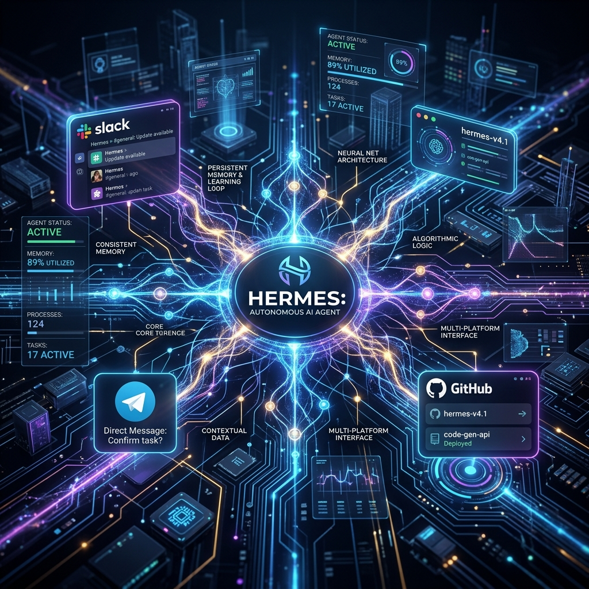

Hermes Agent: The Autonomous AI Colleague and Its Real-World Use Cases
The landscape of Artificial Intelligence is rapidly shifting from ephemeral, stateless chatbots to continuous, self-improving autonomous agents. Leading this paradigm change is Hermes Agent—an open-source, persistent AI agent framework designed by Nous Research that acts as a true digital colleague rather than a standard chat window.
While traditional LLM interactions reset context every time a session closes, Hermes operates continuously on background daemons, refines its own capabilities over time, and executes multi-step workflows across your software ecosystem.
Key Takeaway: Hermes Agent moves beyond simple text generation by combining persistent long-term memory, dynamic skill creation, multi-platform connectivity, and isolated sub-agent delegation.

What Makes Hermes Agent Different?
Traditional AI assistants operate on a "prompt-and-forget" model. Once you close your browser tab or restart your shell, the agent loses all contextual nuances, custom functions, and learned user preferences.
Hermes Agent reimagines this interaction paradigm around three core architectural pillars:
1. The Self-Improving Skill Loop
Unlike rigid agents locked to pre-coded APIs, Hermes features a continuous learning architecture. When tasked with novel or complex challenges, Hermes writes, tests, and saves its own execution scripts (skills). Over successive runs, it refines these skills, building a customized library of capabilities unique to your workflow environment.
2. Daemon-Level Persistence & Long-Term Memory
Hermes runs as a long-lived process on your local machine, server, or cloud VPS. It retains memory of past conversations, background job logs, system configurations, and operational outcomes indefinitely, eliminating the need to re-explain project context.
3. Model-Agnostic Flexibility
Engineers are not locked into a single provider. Hermes seamlessly interfaces with top-tier foundation models via OpenRouter (200+ models), Anthropic Claude, OpenAI GPT-4, Nous Portal, or self-hosted local LLMs via Ollama and custom OpenAI-compatible endpoints.
Core Technical Features of Hermes
Before diving into use cases, let's highlight the key capabilities that enable Hermes to operate autonomously:
Multi-Platform Access: Interact with your agent across terminal, desktop UI, or native messaging interfaces including Telegram, Discord, Slack, WhatsApp, Signal, and Email.
Isolated Sub-Agents: Delegate specialized, long-running sub-tasks to ephemeral background worker agents without polluting the primary context window.
Cron-Based Scheduling: Configure background jobs to trigger periodic data aggregation, system health audits, or scheduled reports automatically.
Built-in Tooling Arsenal: Comes pre-packaged with 40+ production tools including headless web browsers, terminal runners, search engines (SearXNG), vision inspection, and filesystem controllers.
4 Real-World Enterprise & Developer Use Cases
1. Autonomous Developer Workflows & CI/CD Auditing
Modern engineering teams deal with constant context switching across pull requests, build logs, and issue trackers.
Hermes can be deployed on a background VPS to continuously monitor GitHub repositories and CI/CD pipelines. When a build fails or a PR stalls:
- Hermes inspects error tracebacks and test logs autonomously.
- It formulates a fix or generates a detailed diagnostic summary.
- It sends an actionable alert to the developer via Slack or Telegram, complete with proposed code diffs.
# Example Hermes CLI invocation for background PR review daemon
hermes daemon --task "Monitor repo pull-requests, run lint checks, and notify on Telegram" --cron "*/15 * * * *"
2. Self-Learning Market Research & Automated Trading Daemons
In fast-moving financial and crypto markets, manual data gathering creates latency.
Using Hermes's tool-building capabilities, developers have built self-learning market daemons that:
- Monitor weather forecasts, supply chain feeds, and news outlets simultaneously.
- Compare predictions across multiple data providers and execute trades via API.
- Conduct post-trade reviews, measuring outcome accuracy against forecasts and updating trading strategies automatically over time.
3. Multi-Step Web Tasking & Automated Content Pipelines
Building static web pages or publishing content usually involves multiple disparate steps: research, drafting, image generation, HTML compilation, and CDN deployment.
Hermes handles end-to-end publishing pipelines autonomously:
- Conducts web research on specified topics using headless browsing.
- Formats articles into clean Markdown with structured YAML frontmatter.
- Triggers static site engines (such as the inRay Content Engine) to build and deploy updated HTML, XML sitemaps, and RSS feeds directly to production servers.
4. Privacy-First Self-Hosted Personal Operations
For enterprises and privacy-conscious users concerned about third-party data collection, Hermes offers full self-hosting capabilities:
- Run Hermes on local hardware (e.g., Apple Silicon or private Linux servers).
- Route search queries through self-hosted SearXNG instances.
- Share specialized skill packs across team members while maintaining absolute data sovereignty.
How to Get Started with Hermes Agent
Integrating Hermes into your developer toolkit or enterprise infrastructure follows a simple setup process:
- Installation: Install Hermes via python pip or clone the repository to your environment.
- Configure Provider Keys: Add your LLM provider API key (or point to local Ollama endpoints).
- Connect Messaging Interfaces: Link your Telegram bot token or Slack app webhook for mobile access.
- Deploy Background Daemons: Launch persistent tasks with cron schedules to start automating daily workflows.
Conclusion & Future Outlook
Hermes Agent represents a fundamental shift in how we collaborate with Artificial Intelligence. By giving AI agents persistent memory, autonomous skill creation, and multi-channel access, Nous Research has created a blueprint for the next decade of intelligent automation.
At inRay Labs, we are pioneering AI agent architectures, static content engines, and multi-tenant SaaS products that leverage autonomous pipelines to maximize engineering velocity.
Interested in deploying autonomous AI workflows or building scalable SaaS architectures? Explore our solutions at inRay Labs.